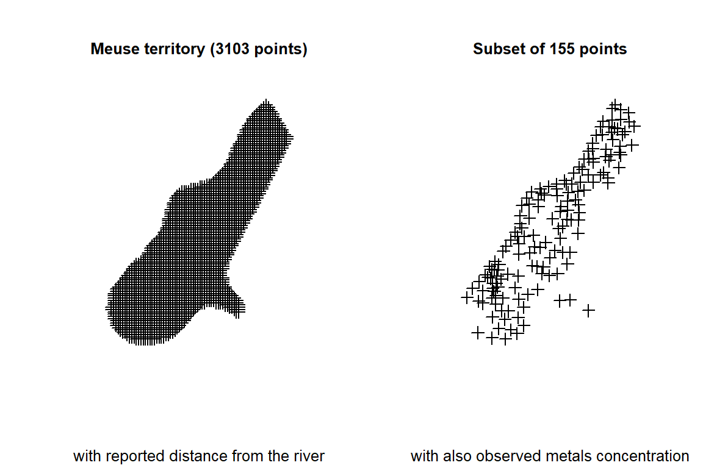

Spatial sampling with SamplingStrata
Marco Ballin, Giulio Barcaroli
2020-08-11
Source:vignettes/spatial.Rmd
spatial.RmdOptimization with the spatial method
Let us suppose we want to design a sample survey with \(k\) \(Z\) target variables, each one of them correlated to one or more of the available \(Y\) frame variables.
When frame units are georeferenced or geocoded, the presence of spatial auto-correlation can be investigated. This can be done by executing for instance the Moran test on the target variables: if the null hypothesis is rejected (i.e. the hypothesis of the presence of spatial auto-correlation is accepted) then we should take into account also this variance component.
As indicated by deGruijter et al. (2016) and deGruijter, Wheeler, and Malone (2019), in case \(Z\) is the target variable, omitting as negligible the fpc factor, the sampling variance of its estimated mean is:
\[\begin{equation} \label{eq1} V(\hat{\bar{Z}}) = \sum_{h=1}^{H}(N_{h}/N)^{2} S_{h}^{2}/n_{h} \end{equation}\]
We can write the variance in each stratum \(h\) as:
\[\begin{equation} \label{eq2} S_{h}^{2} = \dfrac{1}{N_{h}^{2}} \sum_{i=1}^{N_{h-1}}\sum_{j=i+1}^{N_{h}}(z_{i}-z_{j})^{2} \end{equation}\]
The optimal determination of strata is obtained by minimizing the quantity \(O\):
\[\begin{equation} \label{eq3} O = \sum_{h=1}^{H} \dfrac{1}{N_{h}^{2}} \{ \sum_{i=1}^{N_{h-1}} \sum_{j=i+1}^{N_{h}} (z_{i}-z_{j})^{2}\}^{1/2} \end{equation}\]
Obviously, values \(z\) are not known, but only their predictions, obtained by means of a regression model. So, in Equation we can substitute \((z_{i}-z_{j})^{2}\) with
\[\begin{equation} \label{eq5} D_{ij}^{2} = \dfrac{(\tilde{z}_{i}-\tilde{z}_{j})^{2}}{R^{2}} + V(e_{i}) + V(e_{j}) - 2Cov(e_{i},e_{j}) \end{equation}\]
where \(R^{2}\) is the squared correlation coefficient indicating the fitting of the regression model, and \(V(e_{i})\), \(V(e_{j})\) are the model variances of the residuals. The spatial auto-correlation component is contained in the term \(Cov(e_{i},e_{j})\).
In particular, the quantity \(D_{ij}\) is calculated in this way:
\[\begin{equation} \label{eq6} D_{ij}^{2} = \dfrac{(\tilde{z}_{i}-\tilde{z}_{j})^{2}}{R^{2}} + (s_{i}^{2} + s_{j}^{2}) - 2 s_{i} s_{j} e^{-k (d_{ij}/range)} \end{equation}\]
where \(d_{ij}\) is the Euclidean distance between two units i and j in the frame (calculated using their geographical coordinates, that must be expressed in meters), the \(s_{i}\) and \(s_{j}\) are estimates of the prediction errors in the single points and range is the maximum distance below which spatial auto-correlation can be observed among points. The value of range can be determined by an analysis of the spatial variogram.
To summarize, when frame units can be geo-referenced, the proposed procedure is the following:
- acquire coordinates of the geographic location of the units in the population of interest;
- fit a kriging model (or any other spatial model) on data for each \(Z\);
- obtain predicted values together with prediction errors for each \(Z\) and associate them to each unit in the frame;
- perform the optimization step.
Example
In order to illustrate the “spatial” method, we make use of a dataset generally employed as an example of spatially correlated phenomena (in this case, the concentration of four heavy metals in a portion of the river Meuse). This dataset comes with the library “sp”:
library(sp) # locations (155 observed points) data("meuse") # grid of points (3103) data("meuse.grid") meuse.grid$id <- c(1:nrow(meuse.grid)) coordinates(meuse)<-c("x","y") coordinates(meuse.grid)<-c("x","y")

We analyse the territorial distribution of the lead and zinc concentration, and model (by using the universal kriging) their relations with distance from the river, using the subset of 155 points on which these values have been jointly observed:
## [using universal kriging]plot(kriging_lead,sp.layout = NULL, justPosition = TRUE)

## [using universal kriging]
It is possible to calculate the fitting of the two models in this way:
## [1] 0.9999997## [1] 0.9999999Using these kriging models, we are able to predict the values of lead and zinc concentration on the totality of the 3,103 points in the Meuse territory:
df <- NULL df$id <- meuse.grid$id df$lead.pred <- kriging_lead$krige_output@data$var1.pred df$lead.var <- kriging_lead$krige_output@data$var1.var df$zinc.pred <- kriging_zinc$krige_output@data$var1.pred df$zinc.var <- kriging_zinc$krige_output@data$var1.var df$lon <- meuse.grid$x df$lat <- meuse.grid$y df$dom1 <- 1 df <- as.data.frame(df) head(df)
## id lead.pred lead.var zinc.pred zinc.var lon lat dom1
## 1 1 5.509360 0.1954937 6.736502 0.2007150 181180 333740 1
## 2 2 5.546006 0.1716895 6.785460 0.1749260 181140 333700 1
## 3 3 5.488913 0.1784052 6.698883 0.1826314 181180 333700 1
## 4 4 5.388320 0.1855561 6.558216 0.1906426 181220 333700 1
## 5 5 5.584415 0.1463018 6.841612 0.1465346 181100 333660 1
## 6 6 5.525538 0.1533757 6.749216 0.1549663 181140 333660 1The aim is now to produce the optimal stratification of the 3,103 points under a precision constraint of 1% on the target estimates of the mean lead and zinc concentrations:
library(SamplingStrata) frame <- buildFrameSpatial(df=df, id="id", X=c("lead.pred","zinc.pred"), Y=c("lead.pred","zinc.pred"), variance=c("lead.var","zinc.var"), lon="lon", lat="lat", domainvalue = "dom1") cv <- as.data.frame(list(DOM=rep("DOM1",1), CV1=rep(0.01,1), CV2=rep(0.01,1), domainvalue=c(1:1) ))
To this aim, we carry out the optimization step by indicating the method spatial:
set.seed(1234) solution <- optimStrata ( method = "spatial", errors=cv, framesamp=frame, iter = 15, pops = 10, nStrata = 5, fitting = c(r2_lead,r2_zinc), range = c(kriging_lead$var_model$range[2],kriging_zinc$var_model$range[2]), kappa=1, writeFiles = FALSE, showPlot = FALSE, parallel = FALSE)
##
## Input data have been checked and are compliant with requirements
## Sequential optimization as parallel = FALSE, defaulting number of cores = 1
## *** Domain : 1 1
## Number of strata : 3103
## *** Sample cost: 61.92901
## *** Number of strata: 4
##
## *** Sample size : 62
## *** Number of strata : 4
## ---------------------------framenew <- solution$framenew outstrata <- solution$aggr_strata
obtaining the following optimized strata:
plotStrata2d(framenew,outstrata,domain=1,vars=c("X1","X2"), labels=c("Lead","Zinc"))
| Stratum | Population | Allocation | SamplingRate | Bounds Lead | Bounds Zinc |
|---|---|---|---|---|---|
| 1 | 468 | 8 | 0.01792501 | 3.3146468764848-4.19255285819977 | 4.06901686494286-5.05063630598842 |
| 2 | 1118 | 22 | 0.01945812 | 3.93768665105216-4.7764979731549 | 5.05229397991744-5.61689510336853 |
| 3 | 776 | 16 | 0.02008296 | 4.44641346310962-5.26600727214482 | 5.61793458171105-6.22421378893523 |
| 4 | 741 | 16 | 0.02186445 | 4.83281864156491-6.16276083528614 | 6.22619751326312-7.33803658123577 |
that can be visualised in this way:
frameres <- SpatialPointsDataFrame(data=framenew, coords=cbind(framenew$LON,framenew$LAT) ) frameres2 <- SpatialPixelsDataFrame(points=frameres[c("LON","LAT")], data=framenew) frameres2$LABEL <- as.factor(frameres2$LABEL) spplot(frameres2,c("LABEL"), col.regions=bpy.colors(5))

We can now proceed with the selection of the sample:
s <- selectSample(framenew,outstrata,writeFiles=FALSE)
##
## *** Sample has been drawn successfully ***
## 62 units have been selected from 4 stratawhose units are so distributed in the territory:

References
deGruijter, J. J., A. B. McBratney, B. Minasny, I. Wheeler, B. P. Malone, and U. Stockmann. 2016. “Farm-Scale Soil Carbon Auditing.” Geoderma, no. 265: 12–130.
deGruijter, J. J., I. Wheeler, and B. P. Malone. 2019. “Using Model Predictions of Soil Carbon in Farm-Scale Auditing - a Sofwtare Tool.” Agricultural Systems, no. 169(C): 24–30.